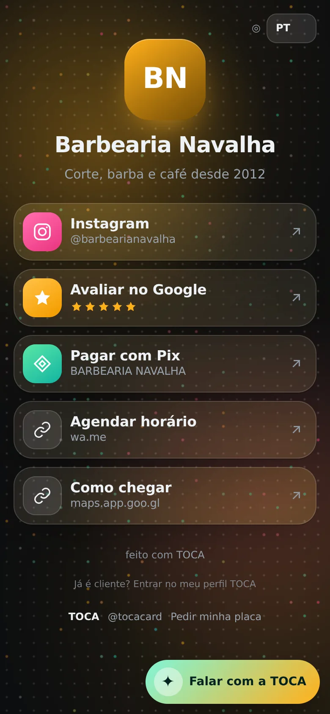
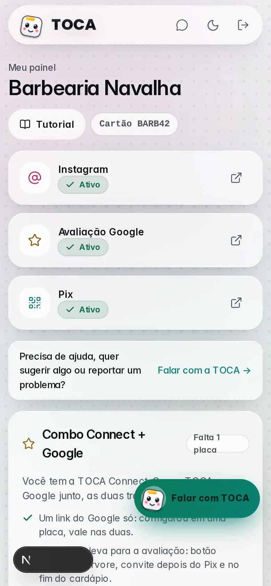
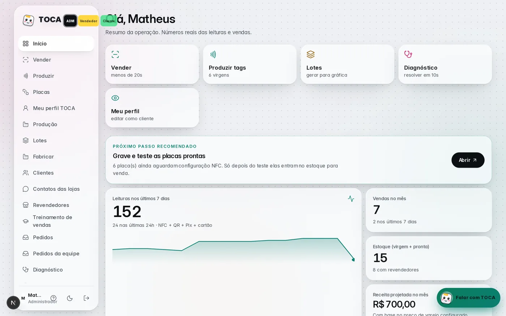

Kairos Digital · produto físico + app
Seu balcão conecta em um toque.
A TOCA é uma peça física que abre o Instagram, a avaliação do Google e o Pix da sua loja em um toque. Mudou qualquer destino? Edita pelo celular — a peça nunca volta para a gráfica.
Agendar demonstraçãoWhatsApp (62) 98492-4326 · resposta em horário comercial · sem compromisso

Veja a peça trabalhando.
Do toque no cartão até o cliente chegar no seu Instagram — em segundos.
Explore o fluxo antes de falar com a gente.
Três telas reais da demonstração oficial do produto. Use as setas do teclado para trocar.
Público do cartão · leitura do QR/NFC
Painel do lojista · destinos editáveis

Painel de operação · leituras por canal

O que a peça faz por você.
Prova de que isso existe.
Nada nesta página é mockup: as telas acima vieram da demonstração oficial rodando em 27/11/2026.
- Peça física porta-copo 9×9 cm com QR (Instagram, Google, Pix) e tag NFC — descrito no repositório oficial do produto.
- URL pública com contrato fixo:
/p/CÓDIGOabre o hub do cartão;/p/CÓDIGO/pix,/ge/igabrem os destinos diretos. - Painéis reais: lojista edita destinos; operação acompanha vendas, lotes e leituras por canal.
- Dados das capturas são fictícios (nome “Barbearia Navalha”, PIN de demonstração) — identificados como demo em todas as peças.
O que todo mundo pergunta antes de decidir.
E se eu trocar meu Instagram ou meu Pix?
Nada muda na peça. O lojista abre o painel pelo celular e atualiza o destino daquele QR. A placa física continua no balcão apontando para o lugar novo.
O cliente precisa baixar aplicativo?
Não. O QR abre direto no navegador do celular (e o NFC abre a mesma URL por toque). O cliente só precisa de internet para abrir o link.
Quem produz a peça física?
A própria operação do produto: produção em lotes, numeração única por peça e controle de estoque no painel. Na demonstração você vê o fluxo completo, do lote à ativação.
Dá para revender?
Sim. O modelo tem cadastro de revendedor, pedidos de atacado e lote compartilhado — o painel de operação trata revenda como fluxo normal. Pergunte pelo kit inicial na demonstração.
Comece com uma peça.
Instale a TOCA no seu balcão ou comece como revendedor. Uma conversa de 10 minutos no WhatsApp mostra o caminho completo.
Chamar no WhatsAppou escaneie com a câmera do celular